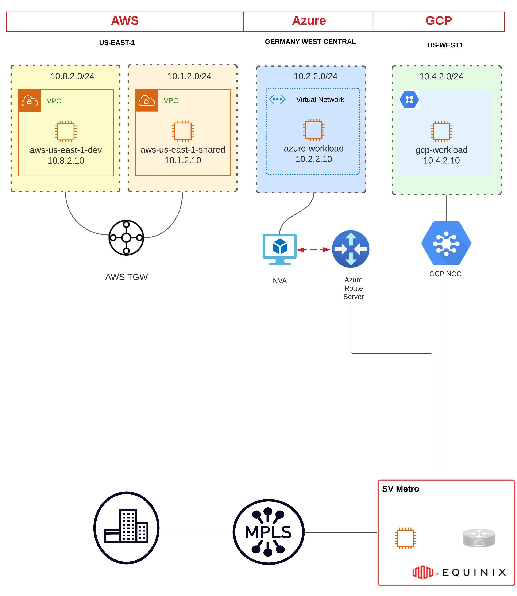
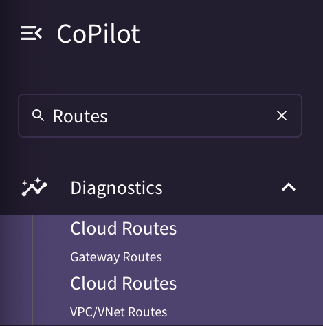
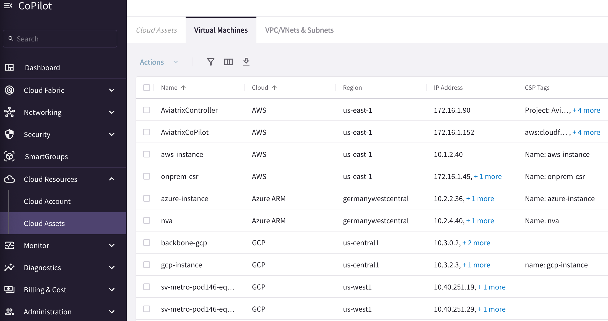
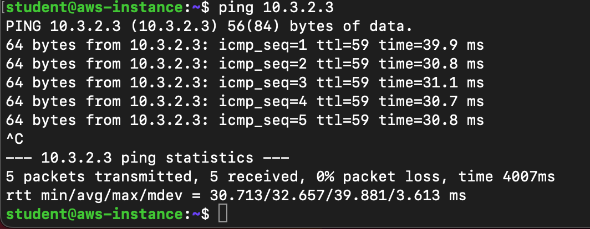

Lab - Cloud Backbone and Hybrid Connectivity#
Lab time: ~45 minutes
1 - Initial Topology#
This is a current topology of a multicloud enterprise that has Data Center in US-East-1 and utilizes Equinix fabric as a Co-location facility in US-West-1 and EU region.
MPLS is heavily used for any East-West traffic between these regions across multicloud environment.
 Figure 1: Initial Topology
1.1 - Quick Knowledge Quiz#
Q. which native cloud services providers resources are used to onboard on-premise resources?
AWS -
Azure -
GCP -
2 - Dynamic Topology#
Please login to Aviatrix Copilot and navigate to topology page by leveraging search bar as shown below.

Figure 2: Using the Search Bar
The following topology will appear on your Copilot
 Figure 3: Cloud Backbone & Hybrid Connectivity Topology
Figure 3: Cloud Backbone & Hybrid Connectivity Topology
2.1 - Quick Knowledge Quiz#
Q2. Where is the Aviatrix Edge deployed?
Q3. To which Aviatrix cloud resources Aviatrix Edge is associated with?
3 - Networking & Security Infrastructure#
3.1 - Transit VPC/VNET/VCN#
Let’s verify:
Cloud Resources –> Cloud Assets –> VPC/VNets Subnets
 Figure 4: Cloud Backbone Transit VPC/VNET/VCN
Figure 4: Cloud Backbone Transit VPC/VNET/VCN
3.2 - Transit Gateways#
Let’s verify Aviatrix Transit Gateways and their peerings.
Cloud Fabric –> Gateways –> Transit Gateways
 Figure 5: Transit Gateways
Figure 5: Transit Gateways
Verify Transit peerings (screenshot not provided)
3.3 Connectivity between Aviatrix Cloud Backbone & Native CSP Constructs#
Verify connectivity between Aviatrix Cloud Backbone and native CSP constructs.
Networking –> Connectivity –> External Connections (S2C)
You will notice different tunnel types due to CSP limitations.
 Figure 6: Connectivity with Native CSP Constructs
Figure 6: Connectivity with Native CSP Constructs
3.4 - Quick Knowledge Quiz#
Q4. How AWS, Azure and GCP transits are peered with each other?
Q5. Was Aviatrix Cloud Backbone established using Standard or High Performance Encryption?
4 - Traffic Routing#
Navigate to the Cloud Routes menu within Copilot by leveraging the search bar as shown below.

Figure 7: Search Bar - Cloud Routes
The following screen will appear:
 Figure 8: Cloud Routes
Figure 8: Cloud Routes
Verify Backbone components are receiving the routes across Multicloud environment including Equinix.
4.1 - Quick Knowledge Quiz#
Q6. What routes GCP Transit GW is receiving from the Equinix Fabric?
5 - Data Plane Verification#
Since this is a brownfield environment where this customer just stared using Aviatrix Cloud Backbone for East-West communication and don’t have Aviatrix Spoke Gateways in any application VPC/VNET/VCN, you won’t be able to find the application ec2/VM on the dynamic topology map. To find the application ec2/VM public IP go to:
Cloud Assets –> Virtual Machines
 Figure 9: Virtual Machines
SSH from your laptop to AWS ec2 instance using terminal:
ssh student@aws.pod#.aviatrixlab.com
NOTE: pod# and password will be provided at the time of lab.
Ping GCP VM’s private IP from the AWS instance to test the backbone:
 Figure 10: Ping Verification
Access all the application instances/VMs using your laptop’s browser using the following links:
http://aws.pod#.aviatrixlab.com/
http://azure.pod#.aviatrixlab.com/
http://gcp.pod#.aviatrixlab.com/
 Figure 11: Browser Verification
Figure 11: Browser Verification
6 - Troubleshooting#
6.1 - Available Paths#
Verify how many paths are available for an application to communicate between AWS and GCP, which one is the best path and why?
6.1.1 Visually from the dynamic topology map
#
Path1 -
Path2 -
Path3 -
6.1.2 Diagnostics –> AppIQ –> FlightPath#
 Figure 12: AppIQ
Figure 12: AppIQ
 Figure 13: FlightPath
Figure 13: FlightPath
6.1.3 Latency Monitor#
Monitor –> Traffic & Latencies –>Gateways
 Figure 14: Latency Monitor
Figure 14: Latency Monitor
7 - Conclusion#
In this lab, we have successfully verified and troubleshooted Aviatrix Cloud Backbone and hybrid connectivity including Equinix colocation.